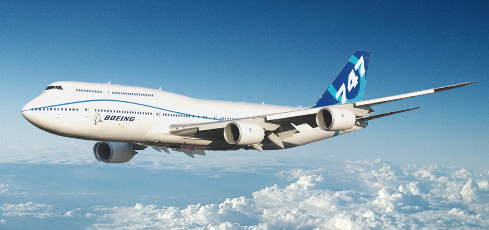
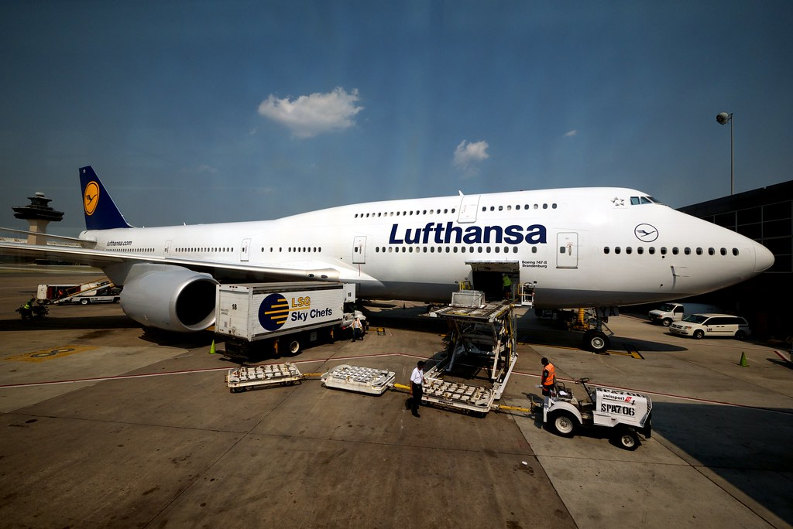
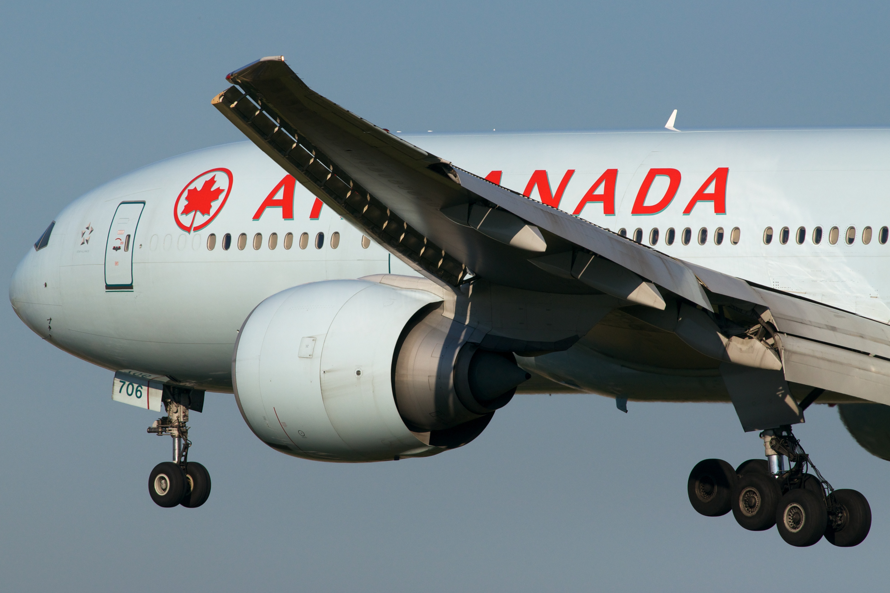
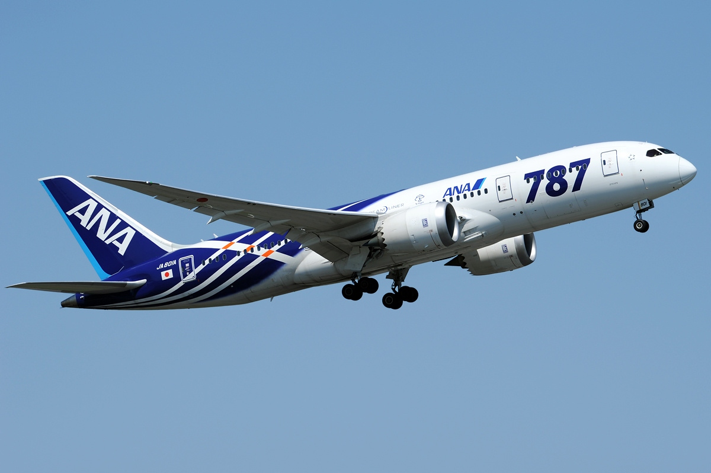

Boeing Aircrafts:
Boeing 747: The first wide-body and original "jumbo jet."
Boeing 747: The first wide-body and original "jumbo jet."
Boeing 777: "Mini jumbo jet" focused largely on efficiency.

Boeing 777: "Mini jumbo jet" focused largely on efficiency.
Boeing 787: Efficiency-focused with advanced materials.